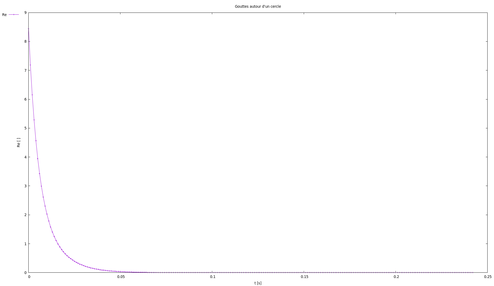
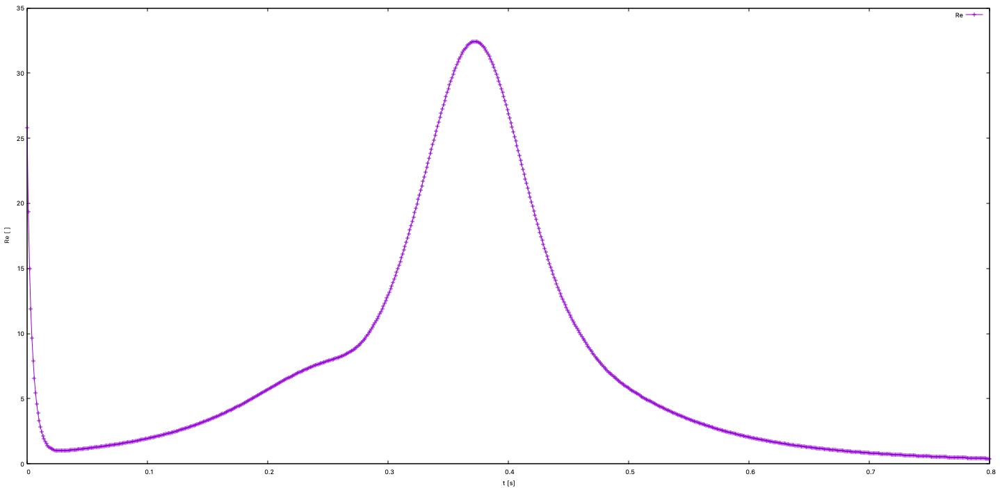
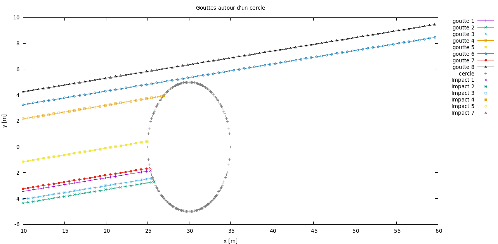
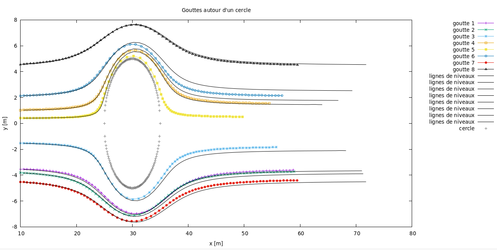
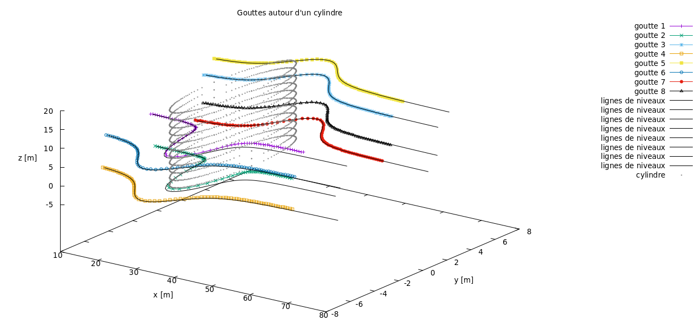

Mise en équation et validations
Mise en équations :
Dans un premier temps, l'étude analytique de la trajectoire des gouttes a été effectuée. On considère la force de traînée et on néglige le poids car en faisant le rapport de la norme des forces on remarque que le poids est négligeable. De plus l’interaction goutte-goutte n’a pas été prise en compte dans ce projet. Ainsi, en explicitant la force de traînée et en faisant le bilan des forces, on peut retrouver l’équation :
\( \frac{du}{dt} = K(u_a-u) \text{ avec : } K = \frac{3\mu_a C_d Re}{4\rho d^2} \text{ et } Re = \frac{\rho a || u_a - u ||d}{\mu_a} \).
C’est le résultat d’une analyse Lagrangienne du phénomène qui suit le mouvement d’une parcelle de fluide au cours du temps et de l’espace. Il faut noter que la force de traînée, causée par la friction entre les gouttes et les molécules gazeuses, influence la vitesse à laquelle les gouttelettes d’eau vont s’accumuler sur la surface de l’aile. En effet, plus la force de traînée de la goutte est importante, plus les gouttes sont ralenties en restant proche de l’aile, ce qui augmente la probabilité de l’accumulation de la glace sur l’aile et vice versa. Cette équation dépend de la densité et du diamètre de la goutte, la viscosité dynamique de l’air, le coefficient de traînée \( C_d\) et le nombre de Reynolds. Tout d’abord, le coefficient de traînée dépend du nombre de Reynolds et peut prendre jusqu’à six valeurs dans notre étude, comme
indiqué dans les équations \( C_d = \left\{ \begin{array}{ll} 0 & \mbox{si } Re = 0 \\ \frac{24}{Re} & \mbox{si } Re \in ]0,0.5] \\ \frac{27.17}{Re^{0.821}} & \mbox{si } Re \in ]0.5,10] \\ \frac{15.268}{Re^{0.571}} & \mbox{si } Re \in ]10,100] \\ \frac{6.877}{Re^{0.398}} & \mbox{si } Re \in ]100,1000] \\ 0.44 & \mbox{sinon.} \end{array} \right. \)
Le nombre de Reynolds dépend quant à lui de la densité de l’air, de la norme de la différence des vitesses entre la goutte et l’air et de la viscosité dynamique de l’air, ainsi que du diamètre de la goutte. Le nombre de Reynolds représente l’état de l’écoulement. En effet, plus le nombre de Reynolds est élevé, plus l’écoulement tend vers un écoulement turbulent. Dans un premier temps seul un écoulement laminaire est étudié (où le fluide se déplace en lignes parallèles sans se mélanger), donc avec un faible nombre de Reynolds.
-


Figure 1 : Re en fonction de x
Implémentation :
L’implémentation du code a été effectuée en C++. Un schéma RK4 a été implémenté pour discrétiser la dérivée de u en temps. Après avoir validé l’ordre et la convergence du schéma, des études du nombre de Reynolds pour un écoulement constant et pour un écoulement potentiel ont été effectuées. On trace en Figure 1 le nombre de Reynolds en fonction de la position x de la goutte dans l'espace au cours du temps. On peut remarquer sur le haut de la Figure 1 que le nombre de Reynolds diminue exponentiellement dans un écoulement constant. Il n’y a donc plus de phénomène de turbulence à partir d’un certain moment. Cependant, on peut souligner que dans un écoulement potentiel, le nombre de Reynolds augmente de nouveau quand la vitesse de l’écoulement augmente autour du cercle, comme montré en bas de la Figure 1.
Écoulement constant:
Tout au long de ce projet, trois types d’écoulements ont été étudiés. Premièrement, un écoulement d’air uniforme a été analysé afin de valider le code. Plusieurs gouttes ont été jetées dans cet écoulement avec un obstacle ciculaire. Dans cette première étape, on peut voir en Figure 2 la trajectoire des gouttes venir impacter (ou non) le cercle. Comme attendu, les gouttes ont des trajectoires rectilignes, suivant les lignes de niveaux du flux.
-

Figure 2 : Trajectoire de gouttes dans un écoulement constant
-

Figure 3 : Goutte dans un écoulement potentiel en 2D
Écoulement potentiel :
Après cette première validation, un écoulement plus complexe a été étudié. On analyse un écoulement potentiel autour d'un cercle en Figure 3. On peut remarquer que dans cet exemple les gouttes suivent l'écoulement potentiel avant l’obstacle, ce qui s’explique par une vitesse initiale de l’écoulement (100 m/s) très forte comparé à la taille de la goutte et parce-que le poids est négligé. La trajectoire de la goutte se détache de la ligne de niveau juste après l’obstacle quand la vitesse de l’écoulement commence à décroître. En étudiant la physique associée à ce phénomène, ces résultats étaient attendus.
Extension en 3D :
Par la suite, le code a été étendu au cas tridimensionnel. L’étude de l’écoulement potentiel autour d’un cylindre a été menée. Sur la Figure 4, on peut constater que les résultats obtenus sont similaires à ceux obtenus en 2D pour ce même cas.
-

Figure 4 : Gouttes dans un écoulement potentiel en 3D